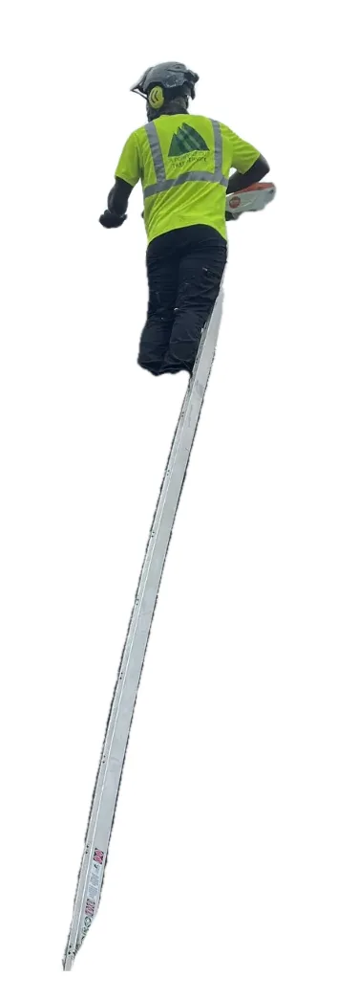

Consulting and Construction Permitting in New Orleans
Urgent or unsafe? Call (504) 732-0779


Expert Arborist Services Tailored to You
Pre- and post-construction consultation is also a focus of our efforts. We understand that a lot of damage to urban trees is caused by construction activities that stress the roots. Our consultation services can help contractors, homeowners, and developers maximize the survival rate of remaining trees by establishing proper practices during the construction process. There is also much that can be done after the stress has manifested from previous construction injuries. We frequently work with clients to improve the health of trees damaged by construction.
The best way to avoid tree loss during construction is to have an arborist prepare a tree protection plan. Tree Protection Plans lay out the space requirement for existing trees, detail specific ways and means of protection, and can help in deciding which trees are most worthy of preservation. They can also detail remediation recommendations for trees impacted directly or indirectly by construction activity.
Need expert advice for your next tree-related project? A Perfect Cut Tree offers consulting and construction permitting services. Our experienced team will provide you with the required permits and guidance for your development or construction projects, making sure your project meets local regulations. Contact us today to schedule a consultation.
What to Photograph From a Safe Distance
Photos and video show us the tree, the property around it, how we would reach it, and any visible hazards.


Tree down or a limb on a line?
Skip the photos and call. Calls are answered 24/7.
(504) 732-0779Office hours: Monday to Friday 7 AM to 5 PM, Saturday 7 AM to 3 PM, closed Sunday.
Other Tree Care Services

Tree Preservation
We protect mature and valuable trees through root zone care, pruning, and soil management to ensure longevity and vitality.
Get My Arborist Review
Tree & Shrub Pruning
We trim trees and shrubs to promote healthy growth, improve appearance, and reduce the risk of damage from overgrown limbs.
Get My Arborist Review
Tree Trimming
Our tree trimming service enhances tree health, improves curb appeal, and reduces risk by removing dead or overgrown branches with precision and care.
Get My Arborist Review
Ready to Show Us Your Tree?
Show us the tree. An arborist reviews what you send. Photos give us a first look. Some trees need an in-person visit before we can make a final recommendation.